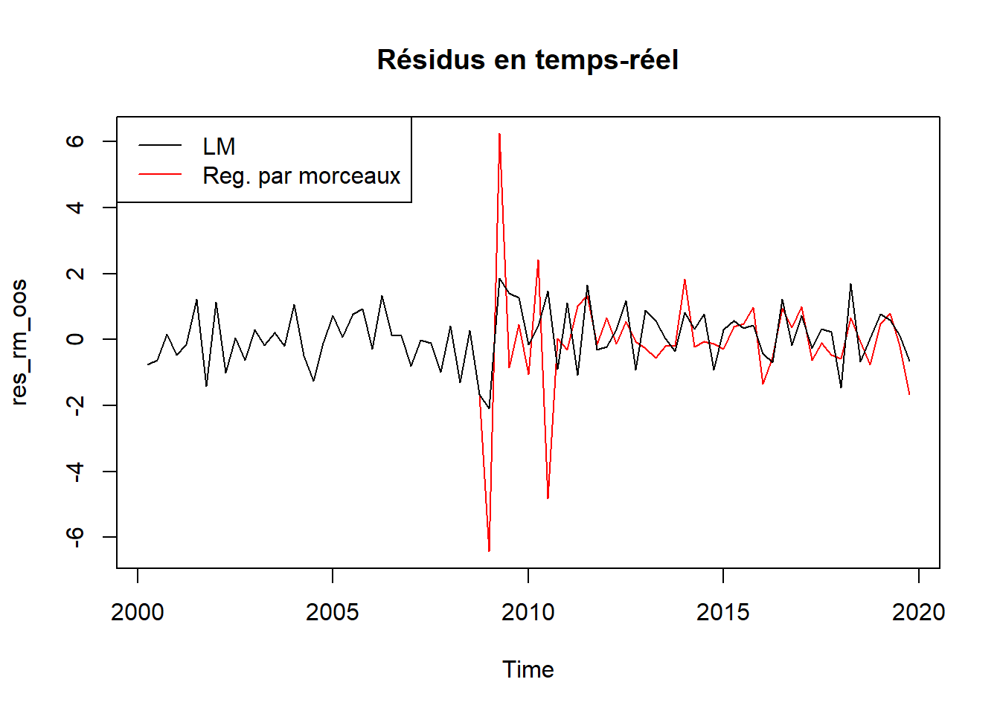
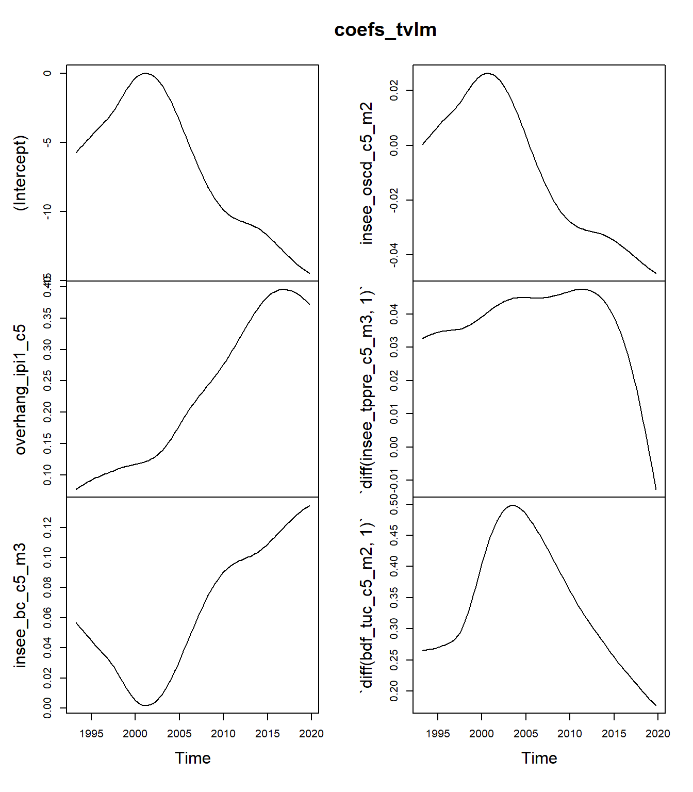
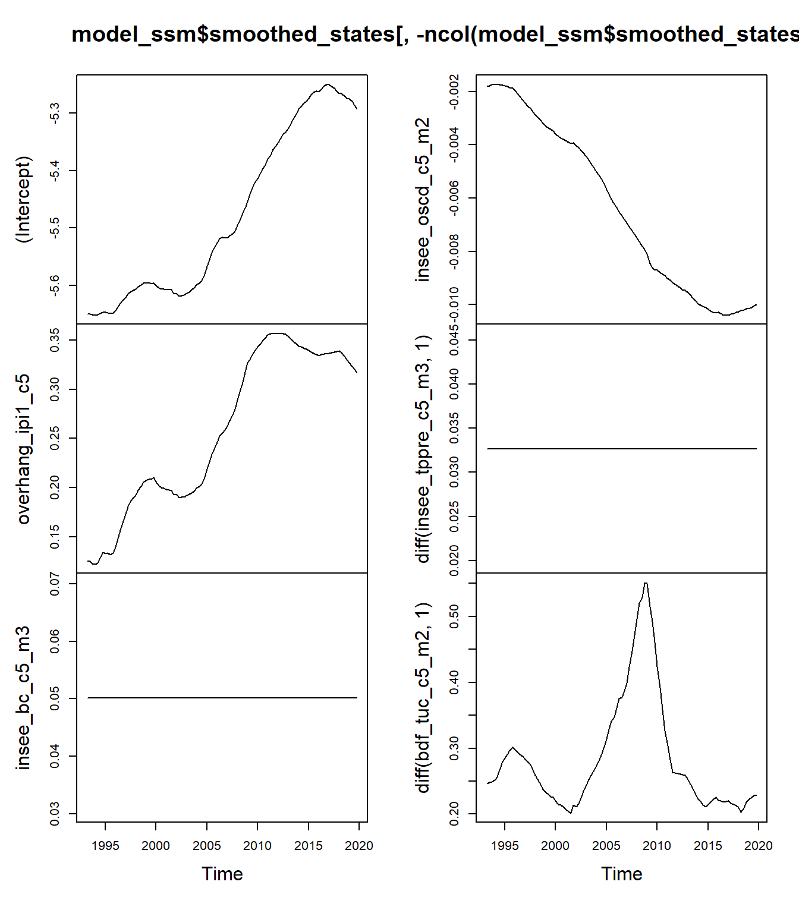

packages_to_install <- c("dygraphs", "car", "dynlm")
packages <- installed.packages()[,"Package"][! packages_to_install %in% installed.packages()[,"Package"]]
if (length(packages) > 0) {
install.packages(packages)
}
if ("tvCoef" %in% installed.packages()[,"Package"]) {
remotes::install_github("palatej/rjd3toolkit")
remotes::install_github("palatej/rjd3sts")
remotes::install_github("AQLT/tvCoef")
}Utilisation de modèles de régression à coefficients variant dans le temps pour la prévision conjoncturelle
Atelier D2E
L’objectif de ce TP est d’apprendre à utiliser quelques fonctionnalités du package
tvCoefpour l’estimation de modèles de régression à coefficients variant dans le temps.
Les packages suivants seront utilisés :
Pour l’installation de tvCoef, voir le manuel d’installation. Si vous utiliser le https://datalab.ssp.cloud.fr, créer une instance en cliquant ici :  .
.
Pour ce TP nous utiliserons les données de la base tvCoef::manufacturingpour prévoir l’évolution trimestrielle de la production du secteur des autres industries manufacturières (C5, prod_c5) à partir de :
l’acquis de croissance au premier mois du trimestre de l’indice de production industrielle du même secteur (
overhang_ipi1_c5) ;des soldes d’opinion de l’Insee et de la Banque de France. Ces soldes d’opinion sont trimestrialisés en prenant la place du mois dans le trimestre :
insee_bc_c5_m3: climat des affaires au 3e mois du trimestre (mars, juin, septembre, décembre)insee_oscd_c5_m2: niveau des carnets de commandes au 2e mois du trimestre (février, mai, septembre, novembre)insee_tppre_c5_m3: solde d’opinion sur l’évolution future de la production au 3e mois du trimestre (février, mai, septembre, novembre).bdf_tuc_c5_m2: taux d’utilisation des capacités de production au deuxième mois du trimestre (février, mai, septembre, novembre).
Les deux dernières variables sont utilisées en différence.
Par simplification, nous estimerons ici le modèle entre le 1993T1 et 2019T4 : pour estimer le modèle au-delà cette date, il faudrait ajouter des indicatrices au cours de l’année 2020 et vérifier si le modèle estimé est toujours bien spécifié.
Le modèle peut alors être estimé en utilisant par exemple la fonction dynlm::dynlm()1 :
library(tvCoef)
library(dynlm)
data <- window(manufacturing, start = 1993, end = c(2019, 4))
y <- data[, "prod_c5"]
model_c5 <- dynlm(
formula = prod_c5 ~ overhang_ipi1_c5 + insee_bc_c5_m3 + insee_oscd_c5_m2
+ diff(insee_tppre_c5_m3, 1) + diff(bdf_tuc_c5_m2, 1),
data = data
)
model_c5
Time series regression with "ts" data:
Start = 1993(2), End = 2019(4)
Call:
dynlm(formula = prod_c5 ~ overhang_ipi1_c5 + insee_bc_c5_m3 +
insee_oscd_c5_m2 + diff(insee_tppre_c5_m3, 1) + diff(bdf_tuc_c5_m2,
1), data = data)
Coefficients:
(Intercept) overhang_ipi1_c5
-6.383023 0.102405
insee_bc_c5_m3 insee_oscd_c5_m2
0.061437 -0.005596
diff(insee_tppre_c5_m3, 1) diff(bdf_tuc_c5_m2, 1)
0.039043 0.397070 Les prévisions dans l’échantillon (in sample) peuvent être extraites avec les fonctions fitted() ou predict() et les prévisions en temps-réel (out of sample) avec la fonction tvCoef::oos_prev().
Pour évaluer la qualité en temps-réel, nous utiliserons les résidus à partir de 2000 :
prev_oos_lm <- oos_prev(model_c5)
res_lm_is <- residuals(model_c5)
res_lm_oos <- prev_oos_lm$residuals
rmse_lm <- c(IS = rmse(res_lm_is), OOS = rmse(res_lm_oos))
rmse_lm IS OOS
0.6990756 0.8494077 Pour tracer les prévisions, on peut utiliser la fonction plot() :
plot(window(y, start = 2000))
lines(prev_oos_lm$prevision, col = "red")
legend("bottomleft", legend = c("y","Prev. temps réel"),
col= c("black", "red"), lty = 1)1 Régression par morceaux
Pour utiliser la régression par morceaux, la première étape est d’analyser les potentielles dates de rupture. Pour cela nous utiliserons la fonction tvCoef::piece_reg() (qui s’appuie sur le package strucchange, voir ?strucchange::breakpoints() pour plus d’informations).
Exercice
Utiliser la fonction tvCoef::piece_reg() sur le modèle précédent et regarder les résultats : y a-t-il des dates de ruptures ? Peuvent-elles être interprétées ?
En utilisant notamment oos_prev(), comparer la qualité prédictive des modèles.
Solution
reg_morceaux <- piece_reg(model_c5)
# Ici une date de rupture
# Si pas de rupture détectée, le modèle renvoyé est le modèle initial
reg_morceaux $model
Time series regression with "ts" data:
Start = 1993(2), End = 2019(4)
Call:
dynlm::dynlm(formula = as.formula(formula), data = data2)
Coefficients:
`(Intercept)_2008.75` overhang_ipi1_c5_2008.75
1.70092 0.10847
insee_bc_c5_m3_2008.75 insee_oscd_c5_m2_2008.75
-0.01335 0.03653
`diff(insee_tppre_c5_m3, 1)_2008.75` `diff(bdf_tuc_c5_m2, 1)_2008.75`
0.04306 0.48388
`(Intercept)_2019.75` overhang_ipi1_c5_2019.75
-11.60377 0.47441
insee_bc_c5_m3_2019.75 insee_oscd_c5_m2_2019.75
0.10798 -0.03376
`diff(insee_tppre_c5_m3, 1)_2019.75` `diff(bdf_tuc_c5_m2, 1)_2019.75`
0.03414 0.18874
$start
[1] 1993 2
$end
[1] 2019 4
$frequency
[1] 4
$breakdates
[1] 2008.75
$tvlm
[1] FALSE
attr(,"class")
[1] "piecereg"L’objet précédent est une liste qui contient différentes informations, notamment :
model: le modèledynlmestimé ;breakdates: la date de rupture : 2008T4.
Analysons maintenant les erreurs de prévision :
prev_oos_rm <- oos_prev(reg_morceaux)
res_rm_is <- residuals(reg_morceaux$model)
res_rm_oos <- prev_oos_rm$residuals
start(res_rm_oos) # Commence en 2000 T2[1] 2000 2rmse_rm <- c(IS = rmse(res_rm_is), OOS = rmse(res_rm_oos))
rbind(rmse_lm, rmse_rm) IS OOS
rmse_lm 0.6990756 0.8494077
rmse_rm 0.5731039 1.3826525Elle sont ici réduites dans l’échantillon mais augmentent en temps réel ! En regardant plus précisément, cela vient d’erreurs élevées autour de la date de rupture car l’estimation n’est pas suffisamment robuste !
plot(res_rm_oos, col = "red", main = "Résidus en temps-réel")
lines(res_lm_oos, col = "black")
legend("topleft", legend = c("LM","Reg. par morceaux"),
col= c("black", "red"), lty = 1)
En analysant les prévisions à partir de 2010, les erreurs sont réduites par rapport à précédemment mais restent plus élevées que celles de la régression linéaire :
apply(window(ts.union(res_lm_oos, res_rm_oos), start = 2010), 2, rmse)res_lm_oos res_rm_oos
0.7863127 1.1067406
Exercice
Le modèle précédent suppose une rupture sur toutes les variables : est-ce réaliste dans ce cas ? Appliquer la fonction tvCoef::hansen.test() sur votre modèle et interpréter les résultats.
Solution
hansen.test(model_c5)
Variable L Stat Conclusion
______________________________________________________________
(Intercept) 0.2561 0.47 FALSE
overhang_ipi1_c5 0.8564 0.47 TRUE
insee_bc_c5_m3 0.2708 0.47 FALSE
insee_oscd_c5_m2 0.1508 0.47 FALSE
diff(insee_tppre_c5_m3, 1) 0.2568 0.47 FALSE
diff(bdf_tuc_c5_m2, 1) 0.1533 0.47 FALSE
Variance 0.4562 0.47 FALSE
Joint Lc 1.6516 2.11 FALSE
Lecture: True means reject H0 at level 5% Le test de Hansen conclut que seul l’acquis d’IPI évolue. Attention à l’interprétation du test sur la constante : si cette variable évolue il est possible que la constante aussi.
On peut également faire des tests de Fisher sur le modèle précédent pour tester si les coefficients sont égaux entre les sous-périodes. Cela peut être fait avec la fonction car::linearHypothesis() :
# on rejette H0 => non constance des coefficients
car::linearHypothesis(reg_morceaux$model, "`(Intercept)_2008.75` = `(Intercept)_2019.75`")Linear hypothesis test
Hypothesis:
(Intercept)_2008.75` - Intercept)_2019.75` = 0
Model 1: restricted model
Model 2: y ~ 0 + (`(Intercept)_2008.75` + overhang_ipi1_c5_2008.75 + insee_bc_c5_m3_2008.75 +
insee_oscd_c5_m2_2008.75 + `diff(insee_tppre_c5_m3, 1)_2008.75` +
`diff(bdf_tuc_c5_m2, 1)_2008.75` + `(Intercept)_2019.75` +
overhang_ipi1_c5_2019.75 + insee_bc_c5_m3_2019.75 + insee_oscd_c5_m2_2019.75 +
`diff(insee_tppre_c5_m3, 1)_2019.75` + `diff(bdf_tuc_c5_m2, 1)_2019.75`)
Res.Df RSS Df Sum of Sq F Pr(>F)
1 96 37.058
2 95 35.144 1 1.9145 5.1751 0.02516 *
---
Signif. codes: 0 '***' 0.001 '**' 0.01 '*' 0.05 '.' 0.1 ' ' 1# on rejette H0 => non constance des coefficients
car::linearHypothesis(reg_morceaux$model, "overhang_ipi1_c5_2019.75 = overhang_ipi1_c5_2008.75")Linear hypothesis test
Hypothesis:
- overhang_ipi1_c5_2008.75 + overhang_ipi1_c5_2019.75 = 0
Model 1: restricted model
Model 2: y ~ 0 + (`(Intercept)_2008.75` + overhang_ipi1_c5_2008.75 + insee_bc_c5_m3_2008.75 +
insee_oscd_c5_m2_2008.75 + `diff(insee_tppre_c5_m3, 1)_2008.75` +
`diff(bdf_tuc_c5_m2, 1)_2008.75` + `(Intercept)_2019.75` +
overhang_ipi1_c5_2019.75 + insee_bc_c5_m3_2019.75 + insee_oscd_c5_m2_2019.75 +
`diff(insee_tppre_c5_m3, 1)_2019.75` + `diff(bdf_tuc_c5_m2, 1)_2019.75`)
Res.Df RSS Df Sum of Sq F Pr(>F)
1 96 44.941
2 95 35.144 1 9.7974 26.484 1.429e-06 ***
---
Signif. codes: 0 '***' 0.001 '**' 0.01 '*' 0.05 '.' 0.1 ' ' 1# on ne rejette pas H0 => constance des coefficients
car::linearHypothesis(reg_morceaux$model, "`diff(insee_tppre_c5_m3, 1)_2019.75` = `diff(insee_tppre_c5_m3, 1)_2008.75`")Linear hypothesis test
Hypothesis:
- diff(insee_tppre_c5_m3,_2008.75` + diff(insee_tppre_c5_m3,_2019.75` = 0
Model 1: restricted model
Model 2: y ~ 0 + (`(Intercept)_2008.75` + overhang_ipi1_c5_2008.75 + insee_bc_c5_m3_2008.75 +
insee_oscd_c5_m2_2008.75 + `diff(insee_tppre_c5_m3, 1)_2008.75` +
`diff(bdf_tuc_c5_m2, 1)_2008.75` + `(Intercept)_2019.75` +
overhang_ipi1_c5_2019.75 + insee_bc_c5_m3_2019.75 + insee_oscd_c5_m2_2019.75 +
`diff(insee_tppre_c5_m3, 1)_2019.75` + `diff(bdf_tuc_c5_m2, 1)_2019.75`)
Res.Df RSS Df Sum of Sq F Pr(>F)
1 96 35.201
2 95 35.144 1 0.056906 0.1538 0.6958
Exercice
En exploitant les résultats de l’exercice précédent, simplifier le modèle de régression par morceaux.
On pourra pour cela utiliser le paramètre fixed_var de piece_reg() pour fixer certaines variables (i.e. : ne pas découper les régresseurs).
Comparer les prévisions avec les modèles précédents.
Solution
Ici nous allons fixer toutes les variables sauf les deux premières (constante + acquis d’IPI – overhang)
reg_morceaux2 <- piece_reg(model_c5, fixed_var = c(3, 4, 5, 6))
# Rmq : la date de rupture est détectée sur le modèle complet et non
# sur le sous-modèle avec des variables fixes
reg_morceaux2 $model
Time series regression with "ts" data:
Start = 1993(2), End = 2019(4)
Call:
dynlm::dynlm(formula = as.formula(formula), data = data2)
Coefficients:
insee_bc_c5_m3 insee_oscd_c5_m2
0.042179 0.005864
`diff(insee_tppre_c5_m3, 1)` `diff(bdf_tuc_c5_m2, 1)`
0.042554 0.331692
`(Intercept)_2008.75` overhang_ipi1_c5_2008.75
-4.386765 0.106947
`(Intercept)_2019.75` overhang_ipi1_c5_2019.75
-4.152134 0.443726
$start
[1] 1993 2
$end
[1] 2019 4
$frequency
[1] 4
$breakdates
[1] 2008.75
$tvlm
[1] FALSE
attr(,"class")
[1] "piecereg"prev_oos_rm2 <- oos_prev(reg_morceaux2)
res_rm2_is <- residuals(reg_morceaux2$model)
res_rm2_oos <- prev_oos_rm2$residuals
rmse_rm2 <- c(IS = rmse(res_rm2_is), OOS = rmse(res_rm2_oos))
rbind(rmse_lm, rmse_rm, rmse_rm2) IS OOS
rmse_lm 0.6990756 0.8494077
rmse_rm 0.5731039 1.3826525
rmse_rm2 0.6003532 0.8747103# Après 2010
apply(window(ts.union(res_lm_oos, res_rm_oos, res_rm2_oos), start = 2010), 2, rmse) res_lm_oos res_rm_oos res_rm2_oos
0.7863127 1.1067406 0.7050171 Cela permet d’améliorer la qualité de la prévision en temps-réel mais pas celle dans l’échantillon.
2 Régression locale
Pour rappel, la régression locale revient, pour chaque date \(t\) à estimer \(\beta_t\)
\[ \DeclareMathOperator{\argmin}{argmin} \hat \beta = \underset{\theta_0}{\argmin}\sum_{j=1}^T\left(y_{j}-x_j\theta_0\right)^2K_b\left(\frac{j-t}{T}\right) \]
Dans le package ici utilisé (tvReg), le noyau utilisé par défaut est le noyau tricube :
\[ K(x)=\frac{35}{32}\left( 1- \left\lvert x \right\lvert^2 \right)^3 \mathbb 1_{|x| \leq 1} \text{ et } K_b(x)=\frac 1 b K(x/b) \]
Pour estimer le modèle, nous utilisons la fonction tvReg::tvLM dont le premier paramètre est une formule. Mais contrairement à dynlm, tvLM ne gère pas directement les variables en différence :
library(tvReg)
tvReg::tvLM(formula = prod_c5 ~ overhang_ipi1_c5 + insee_bc_c5_m3 + insee_oscd_c5_m2
+ diff(insee_tppre_c5_m3, 1) + diff(bdf_tuc_c5_m2, 1),
data = data)Error in model.frame.default(formula = prod_c5 ~ overhang_ipi1_c5 + insee_bc_c5_m3 + : les longueurs des variables diffèrent (trouvé pour 'diff(insee_tppre_c5_m3, 1)')Pour éviter les problèmes liées au variables en différence, nous récupérons les données transformées de dynlm en utilisant la fonction tvCoef::get_data(model_c5), ce qui permet également de simplifier la formule en prod_c5 ~ .(puisque la base de données alors utilisée ne contient que les exogènes utiles).
Exercice
Estimer le modèle en utilisant les indications précédentes.
Quelle fenêtre est utilisée (paramètre \(b\)) ? Est-ce que les résultats sont différents de ceux de la régression linéaire ? Tracer les coefficients obtenus à chaque date (fonction coef() pour les extraire, il faudrait reconvertir le résultat en objet ts())
Comparer les erreurs de prévision dans l’échantillon avec ceux des modèles précédents.
Solution
La fenêtre retenue est de 0,31 : les résultats seront donc différents de ceux de la régression linéaire.
tvlm <- tvReg::tvLM(formula = prod_c5 ~ .,
data = get_data(model_c5))Calculating regression bandwidth... bw = 0.4698719 coefs_tvlm <- ts(coef(tvlm), end = end(data), frequency = frequency(data))
plot(coefs_tvlm)
Ici toutes les coefficients sont variables alors que certains pourraient être fixes comme vu dans la partie précédente. Pour fixer certaines variables, on pourrait faire une régression en deux étapes.
res_tvlm_is <- residuals(tvlm)
rmse_tvlm <- c(IS = rmse(res_tvlm_is), OOS = NA)
rbind(rmse_lm, rmse_rm, rmse_rm2, rmse_tvlm) IS OOS
rmse_lm 0.6990756 0.8494077
rmse_rm 0.5731039 1.3826525
rmse_rm2 0.6003532 0.8747103
rmse_tvlm 0.5971192 NALe RMSE dans l’échantillon est réduit.
Exercice
L’objectif de cet exercice est de calculer les prévisions hors échantillon.
Appliquer la fonction tvCoef::oos_prev() au modèle précédent avec les paramètres end = end(data), frequency = frequency(data) (utiles pour garder la structure temporelle des données) : quels sont les paramètres réestimés ?
Appliquer maintenant la même fonction avec le paramètre fixed_bw = TRUE. À quoi cela correspond ? Comparer les erreurs de prévisions obtenus.
Solution
Dans les modèles de régression locales, il y a deux sources de révisions en temps-réel :
Actualisation des coefficients du fait de l’ajout de nouveaux points (noyau asymétrique utilisé pour les premières estimations)
Actualisation de la fenêtre.
Actualisation de la fenêtre et des coefficients
Par défaut, avec oos_prev() tous les paramètres sont réestimés. C’est en particulier le cas de la fenêtre qui est réestimée à chaque date, à chaque observation :
prev_oos_tvlm_all <- oos_prev(tvlm, end = end(data), frequency = frequency(data))Calculating regression bandwidth... bw = 20
Calculating regression bandwidth... bw = 20
Calculating regression bandwidth... bw = 20
Calculating regression bandwidth... bw = 20
Calculating regression bandwidth... bw = 20
Calculating regression bandwidth... bw = 20
Calculating regression bandwidth... bw = 20
Calculating regression bandwidth... bw = 20
Calculating regression bandwidth... bw = 20
Calculating regression bandwidth... bw = 20
Calculating regression bandwidth... bw = 20
Calculating regression bandwidth... bw = 20
Calculating regression bandwidth... bw = 20
Calculating regression bandwidth... bw = 20
Calculating regression bandwidth... bw = 20
Calculating regression bandwidth... bw = 20
Calculating regression bandwidth... bw = 20
Calculating regression bandwidth... bw = 20
Calculating regression bandwidth... bw = 20
Calculating regression bandwidth... bw = 20
Calculating regression bandwidth... bw = 20
Calculating regression bandwidth... bw = 20
Calculating regression bandwidth... bw = 20
Calculating regression bandwidth... bw = 20
Calculating regression bandwidth... bw = 20
Calculating regression bandwidth... bw = 20
Calculating regression bandwidth... bw = 20
Calculating regression bandwidth... bw = 20
Calculating regression bandwidth... bw = 20
Calculating regression bandwidth... bw = 20
Calculating regression bandwidth... bw = 20
Calculating regression bandwidth... bw = 20
Calculating regression bandwidth... bw = 20
Calculating regression bandwidth... bw = 20
Calculating regression bandwidth... bw = 20
Calculating regression bandwidth... bw = 20
Calculating regression bandwidth... bw = 1.419831
Calculating regression bandwidth... bw = 2.82952
Calculating regression bandwidth... bw = 1.223547
Calculating regression bandwidth... bw = 1.170575
Calculating regression bandwidth... bw = 1.15924
Calculating regression bandwidth... bw = 1.149263
Calculating regression bandwidth... bw = 1.042411
Calculating regression bandwidth... bw = 0.9797272
Calculating regression bandwidth... bw = 0.4014617
Calculating regression bandwidth... bw = 0.8781985
Calculating regression bandwidth... bw = 0.4896312
Calculating regression bandwidth... bw = 0.491814
Calculating regression bandwidth... bw = 0.504626
Calculating regression bandwidth... bw = 0.4866928
Calculating regression bandwidth... bw = 0.3382399
Calculating regression bandwidth... bw = 0.4753745
Calculating regression bandwidth... bw = 0.4747202
Calculating regression bandwidth... bw = 0.478007
Calculating regression bandwidth... bw = 0.4662297
Calculating regression bandwidth... bw = 0.4636153
Calculating regression bandwidth... bw = 0.7847365
Calculating regression bandwidth... bw = 0.7712849
Calculating regression bandwidth... bw = 0.4601159
Calculating regression bandwidth... bw = 0.4618806
Calculating regression bandwidth... bw = 0.4630616
Calculating regression bandwidth... bw = 0.4480051
Calculating regression bandwidth... bw = 0.4333001
Calculating regression bandwidth... bw = 0.4067395
Calculating regression bandwidth... bw = 0.7120287
Calculating regression bandwidth... bw = 0.7082321
Calculating regression bandwidth... bw = 0.3906645
Calculating regression bandwidth... bw = 0.3970553
Calculating regression bandwidth... bw = 0.3421958
Calculating regression bandwidth... bw = 0.3365896
Calculating regression bandwidth... bw = 0.329112
Calculating regression bandwidth... bw = 0.3323843
Calculating regression bandwidth... bw = 0.649492
Calculating regression bandwidth... bw = 0.4963082
Calculating regression bandwidth... bw = 0.552225
Calculating regression bandwidth... bw = 0.6002736
Calculating regression bandwidth... bw = 0.5783915
Calculating regression bandwidth... bw = 0.4433933
Calculating regression bandwidth... bw = 0.4365778
Calculating regression bandwidth... bw = 0.4698719 all_bw <- ts(sapply(prev_oos_tvlm_all$model, `[[`, "bw"),
end = end(prev_oos_tvlm_all$prevision),
frequency = frequency(data))
plot(all_bw)
res_tvlm_all_oos <- prev_oos_tvlm_all$residuals
rmse_tvlm["OOS"] <- rmse(res_tvlm_all_oos)
rbind(rmse_lm, rmse_rm, rmse_rm2, rmse_tvlm) IS OOS
rmse_lm 0.6990756 0.8494077
rmse_rm 0.5731039 1.3826525
rmse_rm2 0.6003532 0.8747103
rmse_tvlm 0.5971192 0.8595945# Après 2010
apply(window(ts.union(res_lm_oos, res_rm_oos, res_rm2_oos, res_tvlm_all_oos), start = 2010), 2, rmse) res_lm_oos res_rm_oos res_rm2_oos res_tvlm_all_oos
0.7863127 1.1067406 0.7050171 0.8075138 3 Modèles espace-état
Dans cette dernière partie nous estimons un modèle espace-état avec coefficients qui varient dans le temps.
Pour rappel, puisque nous avons 6 variables exogènes, le modèle s’écrit :
\[ \begin{cases} y_t=X_t\alpha_t+\varepsilon_t,\quad&\varepsilon_t\sim\mathcal N(0,\sigma^2)\\ \alpha_{t+1}=\alpha_t+\eta_t,\quad&\eta_t\sim\mathcal N(0,\sigma^2 Q) \end{cases},\text{ avec }\eta_t\text{ et }\varepsilon_t\text{ indépendants et } Q = \begin{pmatrix}q_1 & &0 \\ & \ddots \\ 0 & & q_6 \end{pmatrix} \]
La matrice \(Q\) peut-être imposée par l’utilisateur (par exemple variance nulle si l’on veut fixer tous les coefficients) ou estimée.
Il y a également deux opérations classiques :
smoothing : estimation de \(\hat\alpha_t=E[\alpha_t|y]\) et \(V_t=V[\alpha_t-\hat\alpha_t]=V[\alpha_t|y]\) : coefficients et variances estimés en utilisant l’ensemble des données disponibles ;
filtering : estimation de \(a_{t+1}=E[\alpha_{t+1}|Y_t]\) et \(P_{t+1}=V[\alpha_{t+1}|Y_t]\) : coefficients et variances estimés de manière dynamique en utilisant l’information disponible jusqu’à la date précédente (estimation en temps-réel).
Pour estimer ces modèles nous utiliserons la fonction tvCoef::ssm_lm() dont le premier paramètre est un modèle de régression linéaire (le modèle model_c5).
Exercice
Par défaut, tvCoef::ssm_lm() estime le modèle en forçant \(q_1=q_2=\dots=q_6=0\). Quel modèle retrouve-t-on ? Regarder les résultats de cette fonction et interpréter les quantités de "smoothed_states", "filtering_states","smoothed_stdev" (sauf dernière colonne).
Solution
Le modèle estimé est le modèle de régression linéaire !
La composante smoothed_states contient les coefficients du modèle de régression linéaire estimé en utilisant toutes les données. La dernière colonne ("noise") contient les résidus. La composante smoothed_stdev contient les écart-types associés aux différents coefficients, la dernière colonne s’interprète de manière plus complexe et ne sera pas détaillée ici.
mod_ssm <- ssm_lm(model_c5)
summary(model_c5)
Time series regression with "ts" data:
Start = 1993(2), End = 2019(4)
Call:
dynlm(formula = prod_c5 ~ overhang_ipi1_c5 + insee_bc_c5_m3 +
insee_oscd_c5_m2 + diff(insee_tppre_c5_m3, 1) + diff(bdf_tuc_c5_m2,
1), data = data)
Residuals:
Min 1Q Median 3Q Max
-2.3241 -0.4566 0.0140 0.4495 1.6115
Coefficients:
Estimate Std. Error t value Pr(>|t|)
(Intercept) -6.383023 3.213333 -1.986 0.04970 *
overhang_ipi1_c5 0.102405 0.022681 4.515 1.72e-05 ***
insee_bc_c5_m3 0.061437 0.029218 2.103 0.03797 *
insee_oscd_c5_m2 -0.005596 0.015019 -0.373 0.71021
diff(insee_tppre_c5_m3, 1) 0.039043 0.012029 3.246 0.00159 **
diff(bdf_tuc_c5_m2, 1) 0.397070 0.077580 5.118 1.48e-06 ***
---
Signif. codes: 0 '***' 0.001 '**' 0.01 '*' 0.05 '.' 0.1 ' ' 1
Residual standard error: 0.7195 on 101 degrees of freedom
Multiple R-squared: 0.7155, Adjusted R-squared: 0.7014
F-statistic: 50.79 on 5 and 101 DF, p-value: < 2.2e-16tail(mod_ssm$smoothed_states, 3) (Intercept) overhang_ipi1_c5 insee_bc_c5_m3 insee_oscd_c5_m2
[105,] -6.383023 0.1024052 0.06143715 -0.005596399
[106,] -6.383023 0.1024052 0.06143715 -0.005596399
[107,] -6.383023 0.1024052 0.06143715 -0.005596399
diff(insee_tppre_c5_m3, 1) diff(bdf_tuc_c5_m2, 1) noise
[105,] 0.03904254 0.3970705 0.5785851
[106,] 0.03904254 0.3970705 0.1141372
[107,] 0.03904254 0.3970705 -0.6226152tail(mod_ssm$smoothed_stdev, 3) (Intercept) overhang_ipi1_c5 insee_bc_c5_m3 insee_oscd_c5_m2
[105,] 3.213333 0.02268142 0.02921753 0.01501868
[106,] 3.213333 0.02268142 0.02921753 0.01501868
[107,] 3.213333 0.02268142 0.02921753 0.01501868
diff(insee_tppre_c5_m3, 1) diff(bdf_tuc_c5_m2, 1) noise
[105,] 0.01202881 0.07757954 0.1554965
[106,] 0.01202881 0.07757954 0.1367629
[107,] 0.01202881 0.07757954 0.1460395La composante filtering_states donne les estimations des coefficients en temps réel : la valeur à la date \(t\) correspond aux estimations des coefficients en utilisant les données jusqu’en \(t-1\). Ainsi, en estimant le modèle jusqu’en 2010T1, les coefficients obtenus sont ceux de la composante filtering_states de 2010T2 :
summary(dynlm(
formula = prod_c5 ~ overhang_ipi1_c5 + insee_bc_c5_m3 + insee_oscd_c5_m2
+ diff(insee_tppre_c5_m3, 1) + diff(bdf_tuc_c5_m2, 1),
data = window(data, end = 2010)
))
Time series regression with "ts" data:
Start = 1993(2), End = 2010(1)
Call:
dynlm(formula = prod_c5 ~ overhang_ipi1_c5 + insee_bc_c5_m3 +
insee_oscd_c5_m2 + diff(insee_tppre_c5_m3, 1) + diff(bdf_tuc_c5_m2,
1), data = window(data, end = 2010))
Residuals:
Min 1Q Median 3Q Max
-1.93741 -0.36837 -0.02174 0.41270 1.50865
Coefficients:
Estimate Std. Error t value Pr(>|t|)
(Intercept) 0.687568 4.010977 0.171 0.864451
overhang_ipi1_c5 0.096558 0.029839 3.236 0.001947 **
insee_bc_c5_m3 -0.003804 0.036838 -0.103 0.918081
insee_oscd_c5_m2 0.027262 0.018837 1.447 0.152869
diff(insee_tppre_c5_m3, 1) 0.047953 0.013331 3.597 0.000639 ***
diff(bdf_tuc_c5_m2, 1) 0.595962 0.104419 5.707 3.46e-07 ***
---
Signif. codes: 0 '***' 0.001 '**' 0.01 '*' 0.05 '.' 0.1 ' ' 1
Residual standard error: 0.6887 on 62 degrees of freedom
Multiple R-squared: 0.8058, Adjusted R-squared: 0.7902
F-statistic: 51.46 on 5 and 62 DF, p-value: < 2.2e-16window(mod_ssm$filtering_states, start = 2010, end = c(2010,2)) (Intercept) overhang_ipi1_c5 insee_bc_c5_m3 insee_oscd_c5_m2
2010 Q1 0.4262027 0.09515354 -0.001352874 0.02587391
2010 Q2 0.6875678 0.09655775 -0.003804293 0.02726163
diff(insee_tppre_c5_m3, 1) diff(bdf_tuc_c5_m2, 1) noise
2010 Q1 0.04759521 0.5960833 0
2010 Q2 0.04795263 0.5959618 0
Exercice
Estimer maintenant le modèle en utilisant les paramètres suivants :
model_ssm <- ssm_lm(model_c5,
var_intercept = 0.01, fixed_var_intercept = FALSE,
var_variables = 0.01, fixed_var_variables = FALSE)Les paramètres fixed_var_intercept = FALSE et fixed_var_variables = FALSE permettent d’indiquer que les variances \(q_1,\dots, q_6\) seront estimées. Les paramètres var_intercept et var_variables n’auront généralement aucun impact sur les résultats (puisque dans notre cas les variances sont estimées), ils interviennent toutefois dans le processus algorithmique : les modifier permet dans certains cas d’éviter des erreurs d’optimisation.
Regarder les coefficients model_ssm$smoothed_states : quelles sont les variables qui varient dans le temps ? À partir de model_ssm$fitted, comparer la qualité prédictive de ce modèle avec les précédents.
Solution
Les variables fixes sont la constante et les carnets de commandes globaux :
plot(model_ssm$smoothed_states[,-ncol(model_ssm$smoothed_states)])
On peut également vérifier en regardant les variances \(\sigma^2q_i\) :
model_ssm$parameters$parameters * model_ssm$parameters$scaling (Intercept).var overhang_ipi1_c5.var
1.870276e-03 3.863439e-04
insee_bc_c5_m3.var insee_oscd_c5_m2.var
0.000000e+00 1.097830e-06
diff(insee_tppre_c5_m3, 1).var diff(bdf_tuc_c5_m2, 1).var
0.000000e+00 3.462322e-03
noise.var
3.548244e-01 res_ssm_is <- y - model_ssm$fitted[,"smoothed"]
res_ssm_oos <- y - model_ssm$fitted[,"filtering"]
rmse_ssm <- c(IS = rmse(res_ssm_is), OOS = rmse(res_ssm_oos))
rbind(rmse_lm, rmse_rm, rmse_rm2, rmse_tvlm, rmse_ssm) IS OOS
rmse_lm 0.6990756 0.8494077
rmse_rm 0.5731039 1.3826525
rmse_rm2 0.6003532 0.8747103
rmse_tvlm 0.5971192 0.9799976
rmse_ssm 0.5422771 0.7441522# Après 2010
apply(window(ts.union(res_lm_oos, res_rm_oos, res_rm2_oos, res_tvlm_lastbw_oos, res_ssm_oos), start = 2010), 2, rmse) res_lm_oos res_rm_oos res_rm2_oos res_tvlm_lastbw_oos
0.7863127 1.1067406 0.7050171 0.7231632
res_ssm_oos
0.6863295 En réalité, la composante filtering ne correspond pas exactement à de l’estimation en temps-réel car certains paramètres ne sont pas estimés de manière dynamique. Pour avoir une vraie estimation en temps-réel, il faudrait réestimer le modèle à chaque date : on peut pour cela utiliser la fonction ssm_lm_oos(). Pour que cette fonction marche, il faut parfois jouer sur les paramètres var_intercept et var_variables.
model_ssm_oos <- ssm_lm_oos(model_c5,
var_intercept = 0.001, fixed_var_intercept = FALSE,
var_variables = 0.001, fixed_var_variables = FALSE)
res_ssm_oos <- y - model_ssm_oos$prevision
rmse_ssm <- c(IS = rmse(res_ssm_is), OOS = rmse(res_ssm_oos))
rbind(rmse_lm, rmse_rm, rmse_rm2, rmse_tvlm, rmse_ssm) IS OOS
rmse_lm 0.6990756 0.8494077
rmse_rm 0.5731039 1.3826525
rmse_rm2 0.6003532 0.8747103
rmse_tvlm 0.5971192 0.9799976
rmse_ssm 0.5422771 0.7337112apply(window(ts.union(res_lm_oos, res_rm_oos, res_rm2_oos, res_tvlm_lastbw_oos, res_ssm_oos), start = 2010), 2, rmse) res_lm_oos res_rm_oos res_rm2_oos res_tvlm_lastbw_oos
0.7863127 1.1067406 0.7050171 0.7231632
res_ssm_oos
0.6571734 On peut enfin faire un graphique avec toutes les prévisions, en utilisant par exemple le package dygraphs :
library(dygraphs)
prevs <- ts.intersect(y, y - res_lm_oos, y - res_rm2_oos, y - res_tvlm_lastbw_oos, y - res_ssm_oos)
colnames(prevs) <- c("y", "lm", "Reg par morceaux", "Reg locale", "SSM")
dygraph(prevs) %>%
dyRangeSelector(dateWindow = c("2010-01-01", "2019-12-01")) %>%
dyOptions(colors = c("black", "red", "green", "blue", "purple"))
Exercice facultatif
L’objectif de cet exercice est d’estimer un nouveau modèle jusqu’en 2022T4 pour faire une prévision jusqu’en 2023T1 :
Créer des indicatrices sur les 4 premiers trimestres de l’année 2020.
Estimer un nouveau modèle
dynlmen ajoutant ces indicatrices.Estimer un nouveau modèle espace-état.
Utiliser les variables exogènes du modèle jusqu’en 2023T1 (on peut pour cela appliquer la fonction
tvCoef::full_exogeneous_matrix()sur le modèledynlm) et la dernière ligne de la composante"smoothed_states"pour effectuer des prévisions sur 2023T1.
Indice (création des indicatrices)
On pourra utiliser le programme suivant pour créer les indicatrices :
ind <- cbind(time(manufacturing) == 2020, time(manufacturing) == 2020.25, time(manufacturing) == 2020.5,
time(manufacturing) == 2020.75)
ind <- ts(apply(ind,2, as.numeric), start = start(manufacturing), frequency = 4)
colnames(ind) <- sprintf("ind2020Q%i", 1:4)
data <- ts.union(manufacturing, ind)
colnames(data) <- c(colnames(manufacturing), colnames(ind))
Solution
Estimation du modèle de régression linéaire :
ind <- cbind(time(manufacturing) == 2020, time(manufacturing) == 2020.25, time(manufacturing) == 2020.5,
time(manufacturing) == 2020.75)
ind <- ts(apply(ind,2, as.numeric), start = start(manufacturing), frequency = 4)
colnames(ind) <- sprintf("ind2020Q%i", 1:4)
data <- ts.union(manufacturing, ind)
colnames(data) <- c(colnames(manufacturing), colnames(ind))data <- ts.union(manufacturing, ind)
colnames(data) <- c(colnames(manufacturing), colnames(ind))
model_c5_complet <- dynlm(
formula = prod_c5 ~ overhang_ipi1_c5 + insee_bc_c5_m3 + insee_oscd_c5_m2
+ diff(insee_tppre_c5_m3, 1) + diff(bdf_tuc_c5_m2, 1)
+ ind2020Q1 + ind2020Q2 + ind2020Q3 + ind2020Q4,
data = data
)
summary(model_c5_complet)
Time series regression with "ts" data:
Start = 1990(2), End = 2022(4)
Call:
dynlm(formula = prod_c5 ~ overhang_ipi1_c5 + insee_bc_c5_m3 +
insee_oscd_c5_m2 + diff(insee_tppre_c5_m3, 1) + diff(bdf_tuc_c5_m2,
1) + ind2020Q1 + ind2020Q2 + ind2020Q3 + ind2020Q4, data = data)
Residuals:
Min 1Q Median 3Q Max
-2.50121 -0.40188 0.00267 0.48994 1.57418
Coefficients:
Estimate Std. Error t value Pr(>|t|)
(Intercept) -6.924304 3.182453 -2.176 0.0315 *
overhang_ipi1_c5 0.115792 0.020951 5.527 1.91e-07 ***
insee_bc_c5_m3 0.065321 0.028967 2.255 0.0259 *
insee_oscd_c5_m2 -0.009964 0.014757 -0.675 0.5008
diff(insee_tppre_c5_m3, 1) 0.026459 0.011405 2.320 0.0220 *
diff(bdf_tuc_c5_m2, 1) 0.361476 0.077713 4.651 8.49e-06 ***
ind2020Q1 -5.195550 0.788939 -6.585 1.23e-09 ***
ind2020Q2 -7.650566 1.654785 -4.623 9.53e-06 ***
ind2020Q3 16.223534 1.482828 10.941 < 2e-16 ***
ind2020Q4 3.324056 0.810984 4.099 7.55e-05 ***
---
Signif. codes: 0 '***' 0.001 '**' 0.01 '*' 0.05 '.' 0.1 ' ' 1
Residual standard error: 0.7705 on 121 degrees of freedom
(131 observations effacées parce que manquantes)
Multiple R-squared: 0.9393, Adjusted R-squared: 0.9348
F-statistic: 208.1 on 9 and 121 DF, p-value: < 2.2e-16prev_oos_lm_complet <- oos_prev(model_c5_complet)Estimation du modèle espace-état :
model_ssm_complet <- ssm_lm(model_c5_complet,
var_intercept = 0.01, fixed_var_intercept = FALSE,
var_variables = 0.01, fixed_var_variables = FALSE)
# # Rmq : on pourrait également fixer à 0 les variances des coefficients associées aux indicatrices :
# model_ssm_complet <- ssm_lm(model_c5_complet,
# var_intercept = 0.01, fixed_var_intercept = FALSE,
# var_variables = c(rep(0.01,5), rep(0, 4)),
# fixed_var_variables = c(rep(FALSE,5), rep(TRUE, 4)))
model_ssm_complet_oos <- ssm_lm_oos(model_c5_complet, date = 18*4,
var_intercept = 0.01, fixed_var_intercept = FALSE,
var_variables = 0.01, fixed_var_variables = FALSE)Enfin, pour calculer les prévisions
X_variables = full_exogeneous_matrix(model_c5_complet)
window(X_variables, start = 2022) (Intercept) overhang_ipi1_c5 insee_bc_c5_m3 insee_oscd_c5_m2
2022 Q1 1 7.629539 108.0 4.5
2022 Q2 1 2.870669 105.8 -2.2
2022 Q3 1 2.663170 97.9 -16.0
2022 Q4 1 1.979440 96.2 -24.6
2023 Q1 1 1.737138 98.7 -23.0
diff(insee_tppre_c5_m3, 1) diff(bdf_tuc_c5_m2, 1) ind2020Q1 ind2020Q2
2022 Q1 -20.1 -0.23 0 0
2022 Q2 0.1 0.53 0 0
2022 Q3 -9.7 0.57 0 0
2022 Q4 10.1 -1.88 0 0
2023 Q1 -1.9 -0.49 0 0
ind2020Q3 ind2020Q4
2022 Q1 0 0
2022 Q2 0 0
2022 Q3 0 0
2022 Q4 0 0
2023 Q1 0 0prevs_lm <- rowSums(X_variables %*% diag(coef(model_c5_complet)))
prevs_lm <- prevs_lm[length(prevs_lm)]
prevs_ssm <- rowSums(X_variables %*% diag(model_ssm_complet$smoothed_states[nrow(model_ssm_complet$smoothed_states), - ncol(model_ssm_complet$smoothed_states)]))
prevs_ssm <- prevs_ssm[length(prevs_ssm)]
full_prevs <- ts.union(prev_oos_lm_complet$prevision,
model_ssm_complet_oos$prevision)
full_prevs <- ts(rbind(full_prevs,
c(prevs_lm, prevs_ssm)),
start = start(full_prevs),
frequency = frequency(full_prevs))
data_forecasts <- ts.union(manufacturing[,"prod_c5"], full_prevs)
data_forecasts <- window(data_forecasts, start = 2010)
colnames(data_forecasts) <- c("y", "lm", "SSM")
dygraph(data_forecasts) %>%
dyRangeSelector(dateWindow = c("2018-01-01", "2023-03-01"))Notes de bas de page
L’avantage de
dynlmpar rapport àlmest qu’il permet de gérer directement la différenciation des variables sans avoir à créer de variable temporaire.↩︎